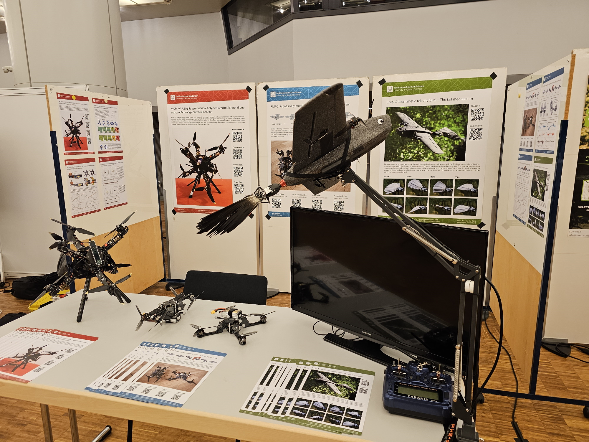
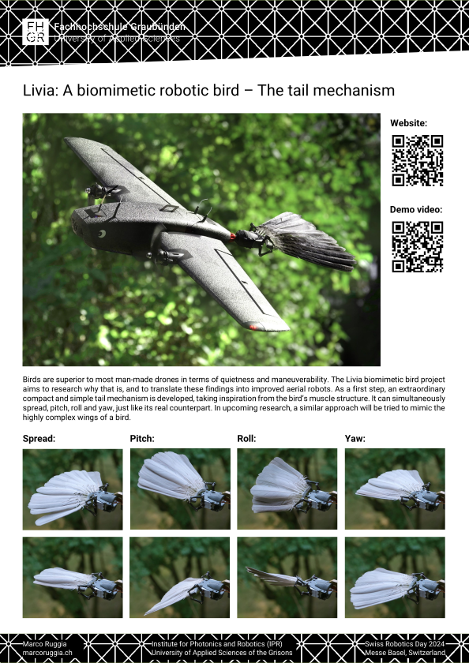

In 2023 I worked for 9 months as a PhD candidate at the Biomimetics Lab in Groningen, Netherlands. I saw myself forced to resign due to unresolvable differences with my supervisor, David Lentink. Professors that can't recognize their abusive behaviour and describe PhD students as "in the trenches" have no place holding power over anyone. I'm far from the first one and probably not the last one to have such an experience with Lentink. Although, this problem is far greater than a few bad apples in accademia, so watch out.
What is left of that time are lots of personal notes and observations on how birds work, as well as a few novel ideas on how to build robotic birds, called ornithopters. Since these ideas are firmly my own, and I won't let myself be be intimidated to step out of the field, I've decided to continue working on them as a hobby project. All results shown below were achieved after I left and do not include any contributions from my former supervisor, not meaning that he did contributed beforehand.

It is thought that the tail of a bird contributes significantly to its maneuverability and efficiency in flight. Four degrees of freedom are commonly recognized that achieve these characteristics: spread, yaw, pitch and roll. While there exist robotic bird tails that can perform all these motions, they are commonly implemented with bulky series linkages and many moving parts.
My realization was that a robotic tail can be built with four parallel actuators if they attach to four corners of a flexible tail that pivots around a fixed center. This arrangement is somewhat similar to how muscles act on the tail of a real bird! To build a mechanism like that I had to use a vast array of manufacturing methods and materials: 3D Printed parts, milled CFRP parts, salvaged RC helicopter linkages, laser-cut spring steel, and even ordinary hot glue. Although, the most difficult manufacturing problem, how to mimic the feathers, was solved in the easiest way possible, by simply using actual pigeon feathers.
If some reader is interested in emulate my design, they should also carefully consider the placement of the linkages, as they strongly affect the range and stability of the mechanism. The problem of computing the inverse kinematics of this mechanism is also a very interesting and challenging one!
The tail mechanism had its first public appearance at the Swiss Robotics Day on the 1. November 2024. It was on display mounted to a carrier plane (Heewing T1-Ranger) that is currently being used to perform system identification flights. Results of these flights are still pending and will be shared once completed! Keen eyed observers might also have noticed that the pigeon tail feathers were replaced by crow feathers, to be better proportionated to the wingspan of the plane.
 In the scope of the ROBOSOFT 2025 conference, a workshop on soft aerial robotics was meant to take place. The entire workshop was regrettably dropped from the conference. However, I did still prepare two submissions in the form of 1-page abstracts, one of which was on the mechanical design of my tail mechanism. Now I'm publishing it independently, together with the CAD files, the bill of materials, and the source code implementation for the Ardupilot autopilot. Please mind the CC BY-NC-SA 4.0 licence, and enjoy!
| Manuscript: | livia_tail.pdf |
| Codebase: | github.com/mruggia/livia_tail |

What is missing from this document, are practical manufacturing instructions. They simply had no space in the 1-page format. Instead, I'll add a few comments here. The CFRP parts should be milled on a CNC mill, and the spring steel flexure should be cut with an appropriate laser cutter (50W Nd:YAG laser in my case). Securely attaching the feathers to the flexure, while allowing for flexibility is the most tricky part. For my design, I used a hypodermic needle to fill the feathers calamus with UV activated glue. Sewing pins are then pushed trough the flexure into the feathers and cured in place (with a 80W 405nm UV light). This constrains the location of the feathers. To constrain their orientation, hot melt glue is used. Specifically acrylic glue, which is more stable and less temperature sususceptible than common EVA based glues.